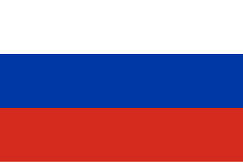

Kateryna Lysenko
Desarrolladora Java
Recientemente formada en tecnologías de la información, especializada en Java, Spring Boot, MySQL y JavaScript.
Objetivo
Mi objetivo es unirme a un equipo donde pueda combinar mi experiencia comercial con mis habilidades técnicas, desarrollando soluciones tecnológicas que realmente impacten a los usuarios.
Me gustaría trabajar en proyectos que unan el mundo tech y el mundo de los negocios, ayudando a las empresas a evolucionar y a sus equipos a trabajar de forma más eficiente.
Experiencia Laboral
Transición Profesional a IT
2023 - 2024
Período de dedicación intensiva a la formación en tecnologías de la información, mientras gestionaba un proyecto familiar personal.
KAM (Jefe de Sección) - Mango
Noviembre 2016 – Febrero 2023
Barcelona, España
- Identificación y gestión de oportunidades de ventas en mercados internacionales (CIS, Balcanes, Bálticos), con una facturación anual superior a 20M €.
- Implementación del proyecto Nexus, una plataforma de ventas al por mayor online.
- Análisis y seguimiento de KPIs para garantizar el cumplimiento de objetivos de rendimiento.
- Gestión de presupuestos anuales, cierre de ventas y planificación de marketing estratégico.
- Gestión de excedentes al cierre de temporada.
Logros:
- Crecimiento del 22% interanual en ventas L4L durante la pandemia.
Coordinadora Comercial - Exportaciones Catanzaro SpA
Abril 2015 – Octubre 2016
Santiago de Chile, Chile
- Gestión de exportaciones internacionales de productos alimenticios.
- Coordinación de despachos y seguimiento del ciclo logístico desde el inicio hasta la entrega final.
- Comunicación efectiva con clientes internacionales como Coca-Cola, PepsiCo, entre otros.
Logros:
- Optimización de procesos internos, mejorando la eficiencia en un 30%.
Responsable de Compras - ATB-Market LLC
Febrero 2008 – Noviembre 2014
Ucrania / China
- Negociación con proveedores y fábricas en Asia para una cadena de 900 tiendas.
- Participación en ferias internacionales (Hong Kong, Cantón, Yiwu) para asegurar la mejor calidad y precios.
- Coordinación de compras de productos no alimentarios como ropa, calzado, artículos para el hogar y más.
Logros:
- Gestión efectiva de exportaciones, adaptándome a cambios financieros y necesidades del mercado interno.
Idiomas
-
 Español: Avanzado
Español: Avanzado
- Inglés: Avanzado
-
 Ucraniano: Nativo
Ucraniano: Nativo
-  Ruso: Avanzado
Referencias disponibles a solicitud.
Educación
-
FP Programación con Lenguajes Orientados a Objetos - Ironhack, 2024
Ver el documento -
Fullstack PHP - Barcelona Activa, 2023
-
MBA en Dirección Financiera - TECH CFO, 2023
Ver el documento -
Postgrado en Ingeniería Mecánica - Ucrania, 2008
Ver el documento
Herramientas y Plataformas Técnicas
Herramientas BI de Datos: Experiencia en visualización y
análisis de datos para la toma de decisiones.
Confluence & Jira: Habilidad en documentación de
proyectos y gestión ágil.
Cobol: Competencia en operaciones de sistemas
heredados.
SAP: Nivel usuario para planificación de recursos y
procesos empresariales.
Habilidades
Comunicación
Capacidad para interactuar eficazmente con clientes, equipos y partes interesadas a todos los niveles.
Dominio MS Office
Excel: Avanzado, con experiencia en análisis de datos,
macros, tablas dinámicas y gráficos.
PowerPoint: Diseño de presentaciones impactantes e
integración multimedia.
Liderazgo y Trabajo en Equipo
Habilidad para guiar y motivar equipos hacia metas, colaborando eficientemente en entornos multifuncionales.
Resolución de Problemas
Mentalidad analítica enfocada en encontrar soluciones prácticas y efectivas bajo presión.
Gestión Organizativa
Capacidad para gestionar múltiples tareas, cumplir plazos y garantizar resultados de alta calidad.
Negociación y Adquisiciones
Experiencia en negociaciones estratégicas entre compradores y proveedores, alineando objetivos para el éxito.
Hobbies
-
Programar:
Apasionada por resolver problemas y crear soluciones innovadoras a través del código.
-
Familia:
Valoro pasar tiempo de calidad con mis seres queridos.
-
Artes Marciales, Yoga y Pilates:
Compromiso con la disciplina, el bienestar físico y el crecimiento personal.
Mi Esencia Personal
"El éxito es la suma de pequeños esfuerzos repetidos día tras día." Refleja mi perseverancia y enfoque en el crecimiento continuo, tanto profesional como personal.
"En las montañas de la locura” de H.P. Lovecraft" - combina misterio, ciencia y exploración, elementos que resuenan con mi pasión por descubrir lo desconocido y enfrentar desafíos con valentía.
La playa Bolonia de Cádiz con sus ruinas romanas. Este lugar combina la serenidad del mar con la riqueza histórica, inspirándome a reflexionar sobre el pasado mientras sigo avanzando hacia el futuro.
"Wind of Change" de Scorpions. Esta canción refleja mi espíritu de transformación, resiliencia y mi capacidad para encontrar nuevas oportunidades en cada cambio que la vida presenta.